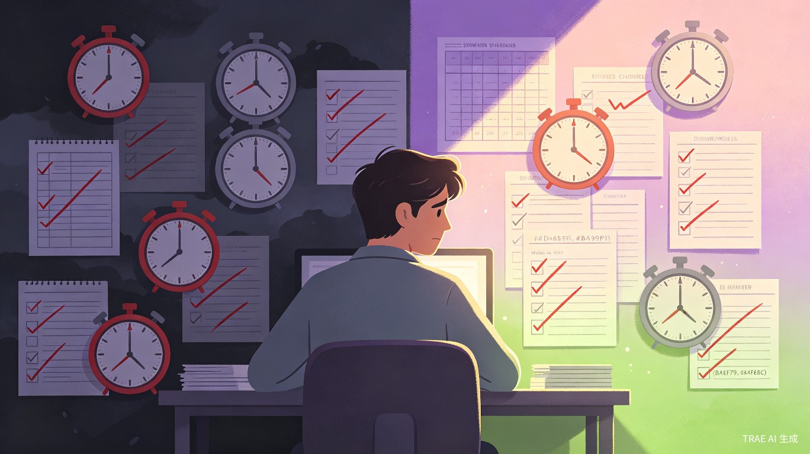
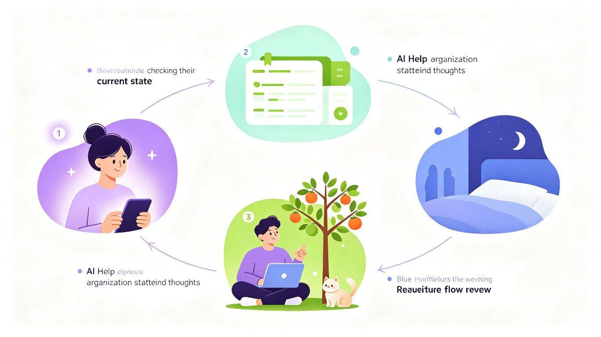

问题：时间管理工具为什么总在吃灰？
市面上的时间管理应用已经多到数不清，但大多数人的手机里，这类 App 的存活周期不超过两周。下载、兴奋地规划了一堆任务、坚持了三天、然后遗忘——这个循环反复上演。
问题不在于功能不够强大，而在于这些工具的设计逻辑违背了人的真实状态。它们假设人可以像机器一样按计划运转：设定一个25分钟的番茄钟，人就应该专注25分钟；列出一串待办清单，人就应该逐一完成。但现实是，人的状态是流动的——有时灵感如泉涌，25分钟根本不够用；有时干坐在桌前25分钟，什么都做不了。

更深层的伤害在于，打卡清单式的工具总给人一种"不完美就等于失败"的挫败感。十件事完成了七件，剩下的三件像三把锁，把今天所有的努力都锁进了"没做到"的抽屉里。你明明做了很多，但工具只提醒你：还有三件事没打勾。这种设计让人越用越觉得自己不行。
尤其是对于ADHD人群、执行力缺陷人群和慢性拖延症患者来说，这种"刚性规划"带来的不是行动力，而是更大的压力和自我否定。他们面对严格的日程表、倒计时、积分奖励体系时，感受到的不是激励，而是焦虑和逃避。外部奖励——积分、金币、兑换屏幕时间——无法解决内在的启动困难。更严格的督促只会让"又一次失败"的体验更加深刻。
核心理念：尊重人的真实状态
"一天"不是一款时间管理工具。它是一个帮助用户恢复自我感知能力的成长伙伴。它不催促你，不给你设定"几点到几点必须做什么"的刚性框架，而是让你根据当下的真实状态，自然地决定接下来做什么。
我们不追求"更高效"，我们追求"更自在"。高效是结果，不是目标。当一个人能感知自己的状态、判断事情的优先级、在合适的时机启动合适的任务，效率是自然发生的事。
三个核心设计原则
流动而非固定
没有严格的"几点到几点"的时间块。用户根据当下的精力、情绪和兴趣，选择接下来要做的事。状态好就多做，状态差就休息或做简单的事。
完成一件，欢喜一件
不追求"全部完成"的完美主义。完成基础事项就是成功。应用只记录你做到了什么，不会追问你还有什么没做。每完成一件事，就有属于这件事的成就感。
滋养而非消耗
通过好奇心驱动、成就感反馈、互动引导、晚间复盘、冥想放松等方式，提供持续的正向滋养。让用户感受到"我能启动""我能做成事"，而非"我又没做到"。
核心功能构想
AI 智能整理：当思绪混乱时，帮你理出头绪
有时候用户的大脑里塞满了"要做的事"，但就是不想一个一个去新建任务条目。这时候，用户可以直接对着应用"倒苦水"——用语音或文字把脑子里乱七八糟的想法一股脑说出来，AI 会自动帮你整理出待办事项，并建议优先级。不需要结构化输入，不需要分类，想到什么说什么，AI 帮你理清。
状态感知与柔性引导
应用不会弹出"你该做XX了"的催促通知。取而代之的是温和的状态确认：你现在感觉怎么样？精力如何？想做什么类型的事？根据用户的回答，给出柔性建议，而非刚性指令。用户始终拥有选择权。
果树成长：时间流逝的温柔可视化
不是倒计时，不是进度条。每完成一件事，应用里的一棵果树就会从发芽、长叶、开花，慢慢结出一颗果实。你可以亲手摘下这颗果实，喂给应用里的小宠物。看着小宠物开心地吃掉果子，那种满足感和成就感，远比系统给你发几枚金币、或者兑换15分钟屏幕时间来得温暖和持久。
这是一种符合内驱力的激励方式：你照顾一棵树，你喂养一个小伙伴，你看着它们因为你的行动而一点点成长。这种连接感、责任感和温柔的正反馈，比任何外部积分体系都更接近人内心真正渴望的奖励。
晚间 AI 复盘：温柔地回顾这一天
复盘不在每件事完成后进行——那会打断一天的节奏。而是在一天结束时，统一进行晚间复盘。应用会把你今天完成的所有事情都记录下来，然后由一位提前设定好语气和方式的 AI 伙伴来引导你回顾。
这位 AI 复盘伙伴的基调是温柔、接纳、正向的。它不会问你"为什么今天的事没做完"，而是帮你看见今天做到了什么，感受是什么，是什么让你能够启动的。它引导你关注"我做到了"，而不是"我没做到"。通过持续的晚间复盘，帮助用户把"我能做成事"的体验真正内化，逐渐改变"我不行""我就是启动不了"的自我认知。
冥想与情绪着陆：白天唤醒，夜晚安眠
应用内置引导冥想功能，白天和夜晚提供不同版本的引导词：
白天冥想
引导词中包含"唤醒"的部分——帮助你平静下来之后， gently 地回到当下，重新找到继续做事的状态和动力。适合在工作间隙、感到焦虑或需要重新聚焦时使用。
夜晚冥想
引导词帮助你放松身体、释放一天的疲惫，自然地进入休息和睡眠。作为晚间复盘的延续，让用户带着平静和自我认可结束这一天。
更重要的是，冥想引导词会根据你这一天的实际情况分档。如果今天非常顺利，完成了很多事，会有一个版本的引导词来庆祝和巩固这份满足感。但如果今天什么事都没完成，也会有另一个版本的引导词——它不会责怪你，不会暗示你"本可以做得更好"，而是温柔地接纳你今天的状态，帮助你放下自责，平静地休息。哪怕只是当作一个基础的冥想应用来用，它也是温暖的。
与传统工具的本质区别
传统时间管理工具
- 刚性时间块（几点到几点）
- 倒计时 / 番茄钟制造紧迫感
- 积分、金币、兑换屏幕时间等外部奖励
- 催促通知："你该做XX了"
- 未完成的事项像"没做到"的烙印
- 追求"全部打卡"的完美主义
一天
- 流动安排，根据当下状态决定
- 果树成长可视化，培养时间体感
- 摘果子喂小宠物，内驱力驱动的正反馈
- 柔性引导："你现在感觉怎么样？"
- 只记录你做到了什么，不追问没做的
- 完成一件，就有一件的成就感
用户体验闭环

感知当下
打开应用，不是看到一堆待办事项的压力，而是被温柔地问一句："你现在感觉怎么样？"帮助用户先回到当下，感知自己的状态。
AI 辅助整理
如果思绪混乱，直接把脑子里的事倒出来，AI 自动帮你梳理出优先级。不需要手动新建任务、设置分类、排定顺序。
流动执行
先完成基础事项（保底），再自由探索感兴趣的事。状态好就多做，状态差就切换到简单的事或休息。没有催促，没有倒计时。每完成一件事，果树就成长一步。
晚间 AI 复盘
一天结束时，AI 伙伴温柔地引导你回顾今天完成的事。它关注的是"你做到了什么"，而不是"你还有什么没做"。帮助你把成就感内化。
冥想休息
复盘之后，自然进入冥想阶段。根据今天的实际状态，收到对应版本的引导词。带着平静和自我认可，结束这一天。
目标用户
核心用户是ADHD人群、执行力缺陷人群、慢性拖延症患者。他们在传统时间管理工具面前反复经历挫败，需要一个完全不同设计哲学的工具来帮助他们。
扩展用户是所有对传统效率工具感到不适的普通人——那些觉得番茄钟太死板、待办清单太压抑、打卡系统太无聊的人。他们不需要"治疗"，只需要一个更符合人性的日常陪伴。
价值与意义
商业价值
这个赛道目前缺乏真正以"人性"为核心设计理念的产品。市面上要么是功能堆砌的效率工具，要么是纯冥想/正念类应用，缺少一个把"状态感知-柔性引导-内驱力正反馈-晚间复盘-分档冥想"打通的产品。随着社会对心理健康和神经多样性议题的关注度持续提升，这个方向有清晰的增长空间。
产品形态与技术路线
初期以响应式 Web 应用（PWA）为主，通过浏览器即可在手机端使用，无需下载安装，降低用户的使用门槛，同时也避免了原生 iOS / Android 应用在大赛期间的跨平台开发难度。后续可根据用户反馈决定是否推出原生客户端。
核心功能包括：
- AI 对话式任务整理（语音/文字输入，自动生成优先级）
- 状态感知与柔性引导系统
- 基础事项 + 探索事项的双层结构
- 果树成长可视化 + 小宠物互动（内驱力正反馈）
- 晚间 AI 温柔复盘（不追问没做的，只看见做到的）
- 分档引导冥想（白天唤醒版 / 夜晚安眠版 / 根据当天状态自适应）
技术上借助 TRAE Work / TRAE IDE 进行快速原型开发，利用 AI 能力实现对话式交互、智能任务整理和温柔复盘，使用大语言模型理解用户的自然语言输入并生成带有预设语气和接纳风格的结构化建议。